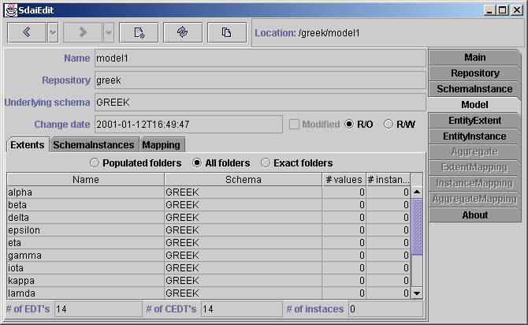
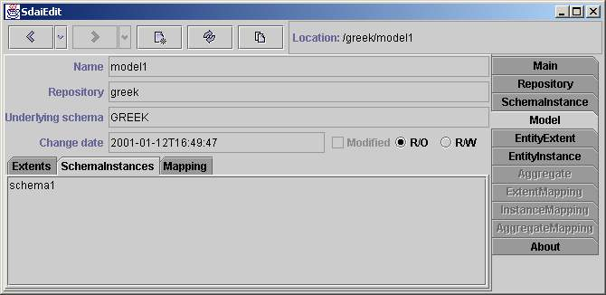

Model page
This page shows the contents of a sdai model. The name of model, repository
to which it belongs to, underlying schema name, change date, modified
flag and current access are given in upper part of page. Change date is automatically
changing when you edit this model. Modified flag shows is model at current
time modified (if it is selected) or not. Also By two access radio buttons
r/o (read only) and r/w (read write) you can see current access to this model.
Also you can change access by selecting one of them, but remember that access
changes automatically when you trying to edit data. There are three sub tabs:
Extents, Schema Instances and Mapping. The Extents and Mapping tabs are the
same as in schema instance
page, but data are taken just from this one model.
Extents

The contents of all associated models together are shown here. At the top
is filtering line where you can filter the table below. 'Populated' will
showall the all entity data types which have more than zero entity data type
values(column '#values'). 'All folders' will show all entity data types.
And 'Exactfolders' filter just these entity data types which have an instance
(column'instances').
Table
Table have four columns: Name, Schema, # values and # instances. Name column
contains names of entity data types (name of entity definition ). Schema
columncontains schema name of of entity data type. # values column shows
how muchentity data type values are for this entity data type and # instances
showshow mush instances have this entity data type. If there is an empty
cell insteadof number in '# values' column this means that such entity data
type valuecan not exist (entity data type is complex). If there is an empty
cell insteadof number in '# instances' column this means that such instance
can not exist(entity data type is abstract).
At the end the total number of entity data types, complex entity data types
and instances are shown.
Schema Instances

All schema instance names to which this model belongs to are listed here.
This is just information page. It is not possible to add model to schemes
here. If you want to do so you need go to
schema instance page and add this model here.
Mapping

Here are listed all AIM data in ARM context (All ARM entity data types).
If there is no ARM schema for this underlying schema, than 'No mapping data'
will appear instead of table. At the top are two filtering radio buttons.
First one 'Populated folders' will list these ARM entity data types which
haveany available AIM instance. And second one 'All folders' lists all available
ARM entity data types.
Table
Table consists of three columns: 'Source (ARM)', 'Target (AIM)' and '#'.
Infirst column are presented ARM entity data type names. In second are AIM
entity data type names. It is need to remember that one ARM entity data types
canbe mapped to several AIM entity data types. So there is relation many
to many.Third column show count of instances which is available for this
pair ARM andAIM entity data types.